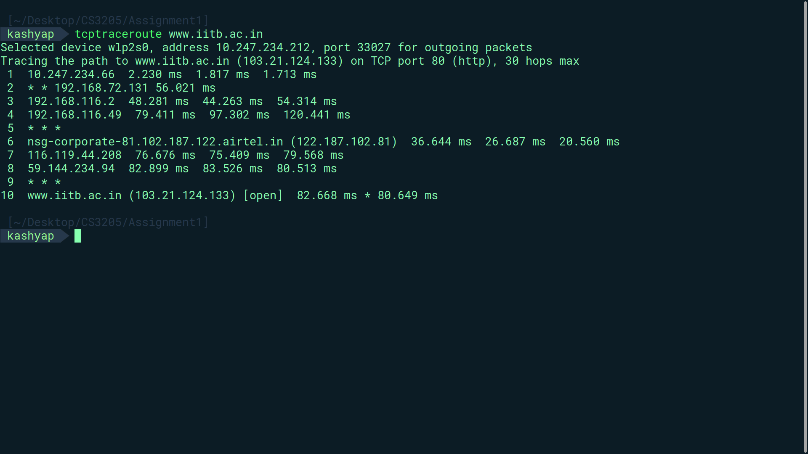

Taken it in the Jan-May 2026 under Prof. Mukulika Maity.
The Report for the Assignment can be viewed here .
Here are the images and codes so that they can be inspected clearly rather than viewed from a pdf.
